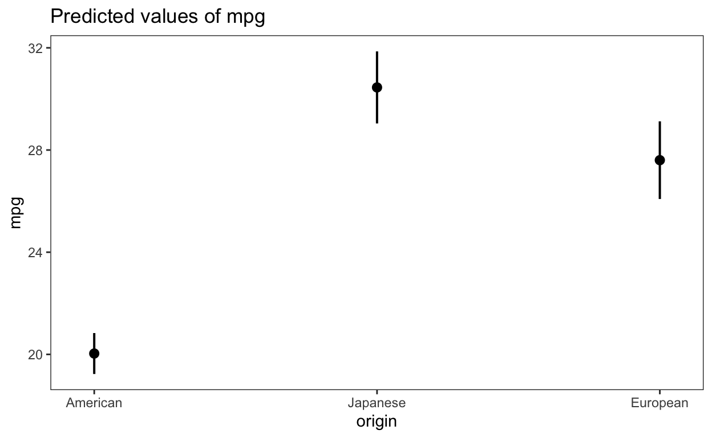
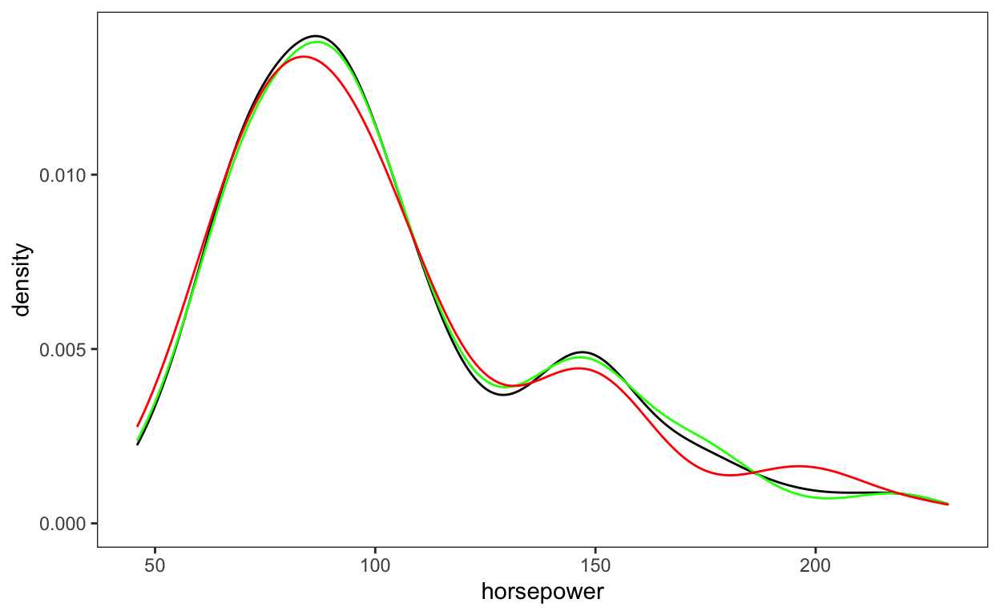
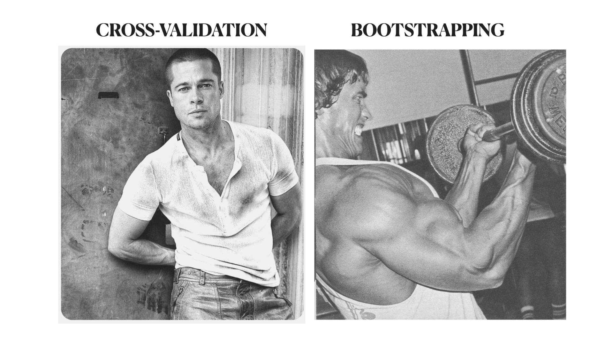

This post as a video
I recommend to watch a video first, because I highlight things I talk about. It’s only 14 minutes long.
Why do we actually need resampling?
The short answer is - resampling allows to create a useful model which helps to confidently answer any question with data. For example, if we want to know “Which cars are more efficient, American, European or Japanese?” we could take all 392 cars from Auto dataset and model miles per gallon for all 3 origins. Plotting predictions reveals that American cars are the least efficient, while Japanese are the most efficient. However, we can’t fully trust those predictions yet, because predictions which are based on the whole dataset can only reflect what the model already knows 🤓. While, if our model is somehow biased, overfitted or the model-assumptions are violated, our predictions might be just wrong. So, we need to somehow test the quality of those predictions.
library(tidymodels)
theme_set(theme_test())
library(ISLR) # for Auto dataset
dim(Auto)[1] 392 9auto <- Auto %>%
mutate(origin = case_when(
origin == 1 ~ "American",
origin == 2 ~ "European",
origin == 3 ~ "Japanese" ))
m <- lm(mpg ~ origin, auto)
library(sjPlot) # I made a video on {sjPlot} 📦
plot_model(m, type = "pred")$origin
Training and Testing sets

Random Resampling
One way to validate our model is to split our data into two distinct datasets, the training set and the test set. That would allow you to develop and optimize the model with training dataset, and use test dataset to determine the efficiency of our model. The function initial_split() from {rsample} package splits data for you. Your just give it the name of your dataset and the proportion you want to allocate into the training set. 80% is usually a good choice. The initial_split() function then uses random sampling to get 80% of your data and if you need those 80% to be reproducible, use set.seed() function with the number of your choise before splitting. After the initial_split(), the training() and testing() functions return the actual data sets.
library(rsample)
set.seed(10) # for reproducibility
auto_split <- initial_split(auto, prop = 0.80)
auto_train <- training(auto_split)
auto_test <- testing(auto_split)
auto_test %>% glimpse()Rows: 79
Columns: 9
$ mpg <dbl> 18, 15, 18, 17, 14, 15, 22, 18, 25, 25, 16, 18,…
$ cylinders <dbl> 8, 8, 8, 8, 8, 8, 6, 6, 4, 4, 6, 6, 8, 6, 4, 4,…
$ displacement <dbl> 307, 350, 318, 302, 455, 383, 198, 199, 110, 10…
$ horsepower <dbl> 130, 165, 150, 140, 225, 170, 95, 97, 87, 95, 1…
$ weight <dbl> 3504, 3693, 3436, 3449, 4425, 3563, 2833, 2774,…
$ acceleration <dbl> 12.0, 11.5, 11.0, 10.5, 10.0, 10.0, 15.5, 15.5,…
$ year <dbl> 70, 70, 70, 70, 70, 70, 70, 70, 70, 70, 71, 71,…
$ origin <chr> "American", "American", "American", "American",…
$ name <fct> chevrolet chevelle malibu, buick skylark 320, p…Stratified Resampling
Such simple random sampling is often good enough, but when some groups of a categorical variable are much more common than others, a simple random sample may accidentally misrepresent proportions of those groups in the training or test set. For example 17% of our cars are European, while 20% are Japanese. So, we have 3% more Japanese cars as compared with European. But when we look at the testing set, we’ll see 5% less Japanese cars as compared with European cars, which is the opposite of what’s true.
auto$origin n percent
American 245 0.6250000
European 68 0.1734694
Japanese 79 0.2015306tabyl(auto_test$origin) auto_test$origin n percent
American 46 0.5822785
European 19 0.2405063
Japanese 14 0.1772152To avoid this, we can use strata = argument to conduct stratified random sampling, where splitting into 80 and 20 percents is conducted separately within each group, and then these sub-samples are combined into the overall training and test set. In this way, the proportions inside of groups will be kept similar to the original data.
set.seed(10) # for reproducibility
auto_split <- initial_split(auto, prop = 0.80, strata = origin)
auto_train <- training(auto_split)
auto_test <- testing(auto_split)
tabyl(auto_test$origin) auto_test$origin n percent
American 49 0.6202532
European 14 0.1772152
Japanese 16 0.2025316But what if an important variable is not categorical, but numeric? In this case we need to keep it’s distributions similar between the training and test set. Because otherwise, if the distribution of an important variable is skewed, simple random resampling may accidentally skew your data even further. (mVertigo effect on the plot below with some strange sound). We don’t want that!
ggplot()+
geom_density(data = auto, aes(horsepower))
Fortunately, numeric data can also be easily stratified. The initial_split() function does it by artificially cutting (binning) numeric data into 4 quartiles and then uses stratified sampling for separate quartiles. For example, when we don’t stratify horsepower of cars (Funny Horse Picture with mVertigo Effect and Horse Whinny sound effect ;) … räuspern … sorry, the distribution of a training set (green) is similar to the original distribution (black), while the test set (red) differs in several locations.
set.seed(10) # for reproducibility
auto_split <- initial_split(auto, prop = 0.80)
auto_train <- training(auto_split)
auto_test <- testing(auto_split)
ggplot()+
geom_density(data = auto, aes(horsepower))+
geom_density(data = auto_train, aes(horsepower), color = "green")+
geom_density(data = auto_test, aes(horsepower), color = "red")
But if we stratify for horsepower, the distribution of a training set almost overlaps with the original set, and the distribution of a test set gets much more similar to the original data.
set.seed(10) # for reproducibility
auto_split <- initial_split(auto, prop = 0.80, strata = horsepower)
auto_train <- training(auto_split)
auto_test <- testing(auto_split)
ggplot()+
geom_density(data = auto, aes(horsepower))+
geom_density(data = auto_train, aes(horsepower), color = "green")+
geom_density(data = auto_test, aes(horsepower), color = "red")
“breaks” argument
By default, {rsample} will cut continuous variables into four parts, but we can increase the number of parts using the breaks argument in order to make distributions of training and test sets even more similar to the original data:
set.seed(10) # for reproducibility
auto_split <- initial_split(auto, prop = 0.80, strata = horsepower, breaks = 10)
auto_train <- training(auto_split)
auto_test <- testing(auto_split)
ggplot()+
geom_density(data = auto, aes(horsepower))+
geom_density(data = auto_train, aes(horsepower), color = "green")+
geom_density(data = auto_test, aes(horsepower), color = "red")
And since there is no downside to using stratified sampling, I would always stratify sampling by the most important variable.
How to test the model
Here is an example of the linear regression, which models miles-per-gallon of cars with their origin and horsepower. Important here is too see that we fit the model only with training data, and then use this model to predict the mpg in the test data. We’ll take only Root mean squared error and coefficient of determination \(R^2\) as the prediction quality indicators. I say only, because there are many more, if you need other metrics. But for now the \(R^2\) of 0.68 means that our model explains 68% of variation in the test data. I think it’s pretty good, but it’s subjective. If this code seems confusing, don’t sweat it, it’s not important for this topic. It just helps to learn about resampling.
# fit the model
lm_fit <-
linear_reg() %>%
set_engine('lm') %>%
set_mode('regression') %>%
fit(mpg ~ origin * horsepower, data = auto_train)
# test performance of the model
test_results <-
predict(lm_fit, new_data = auto_test) %>%
bind_cols(auto_test)
ames_metrics <- metric_set(rsq) # options: "mae", "ccc" etc.
ames_metrics(test_results, truth = mpg, estimate = .pred)# A tibble: 1 × 3
.metric .estimator .estimate
<chr> <chr> <dbl>
1 rsq standard 0.677What is important though, is to differentiate the Goodness-Of-Predictions (GoP) from the Goodness-Of-Fit (GoF). The Goodness-Of-Predictions (GoP), which is the \(R^2\) we just got after using a test data, is a realistic estimate of model performance, because it was tested on the data our model have never seen. While the Goodness-Of-Fit (GoF), which is the \(R^2\) we get, when we fit our model to the whole “auto” dataset, will always result in an artificially optimistic, and therefore unrealistic, estimate of performance. The performance is unreaslistic, because some models are so good that they almost remember the data by hard, with all the noise and contaminations data contains. This phenomenon is called - overfitting and overfitted models are bad, because the noise our model have learned will result into great prediction on the training data and bad predictions on the test data.
By the way, here is a very useful free book about modelling, with code examples for both R and Python: https://ema.drwhy.ai/modelPerformance.html
m <- lm(mpg ~ origin * horsepower, data = auto)
library(performance) # I made a video on {performance} 📦
r2(m)# R2 for Linear Regression
R2: 0.683
adj. R2: 0.679Validation
Classic-Validation
So, we need to split the data in order to be able to properly evaluate model performance. But this produces another problem: How do we know whether the model we just trained is good? If we log-transform the data or add another predictor, we might be able to improve the Goodness-of-Predictions. Therefore, we need to understand the performance of a model before using the test set.

And since it’s critical to use the test-set only once, at the end of model building, we need a second small set of data in order to compare different models we train. This second small data set is similar to the test set, but in order to avoid confusion, it was called - validation set.
Here is how it works: we can take our training set, which is 80% of the original data, and put let’s say 20% of it into a validation set. The 60% of the original data will be used for analysis. This validation set allows to stop the training, when the validation set error rate begins to rise. (make a plot in FCP where the curve of training error declines first and then increases) But I am not giving you any code example yet, because there is a much better way to use validation set.

V-Fold Cross-Validation
And this better way is - cross validation - which is one of the most popular resampling techniques. The working principle is very simple. Instead of cutting off 20% of the data from the training set as one validation set, we split the whole training set into, let’s say 4 validation sets (often called - folds) of 20% each.
We then use each validation set to evaluate the model analysed with the remaining 60% of the data. This produces 4 validations and when we take the average of them, we’ll get a much better idea about the quality of our model, as compared to only one validation set. Such resampling uncovers how well our model works before using the test set.

vfold_cv() function
Programming cross-validation in tidymodels is incredibly easy. We’ll use the vfold_cv() function on the training set, and tell it how many folds do we want. Again, every validation set is similar to a test set, but was called a validation set to avoid confusion. And to avoid confusion between simple validation set and cross-validation, every fold which is used for validation - was called the assessment set, while remaining 3 folds were united to the analysis set. So, for every of the 4 folds, we’ll build a model with the analysis set, and then apply this model on the assessment set to estimate model performance. We then calculate the average performance statistics of 4 models.
<Analysis/Assess/Total>
<232/78/310>Zooming into a first fold will show that 232 observations will be used for the analysis, aka. creating the model, aka. training the model … Oh God it’s confusing! … while 78 observations will be used to assess aka. validate the performance of our model.
workflow() for regression model
Here is how it works:
- we first set up a model, namely linear regression
- we then create a workflow, add the model and the formula to it,
- we then use fit_resamples() function to fit our 4 models. By the way, fit_resamples() function is similar to fit() function we used before, but instead of having a data argument, where we put a training set, fit_resamples() has resamples argument, where we put the folds object which contains our 4 resamples,
- we’ll then use collect_metrics() function to get the average performance of our four fitted and validated models.
Done! But if we want to see performance of all 4 separate models, we’ll specify summarize = FALSE argument inside of collect_metrics()
# set up a model
lm_fit <-
linear_reg() %>%
set_engine('lm') %>%
set_mode('regression')
# create a workflow
mpg_wf <-
workflow() %>%
add_model(lm_fit) %>%
add_formula(mpg ~ origin * horsepower)
# fit models to folds
trained_models <- fit_resamples(object = mpg_wf,
resamples = folds )
trained_models %>%
collect_metrics()# A tibble: 2 × 6
.metric .estimator mean n std_err .config
<chr> <chr> <dbl> <int> <dbl> <chr>
1 rmse standard 4.47 4 0.246 Preprocessor1_Model1
2 rsq standard 0.675 4 0.0299 Preprocessor1_Model1trained_models %>%
collect_metrics(summarize = FALSE)# A tibble: 8 × 5
id .metric .estimator .estimate .config
<chr> <chr> <chr> <dbl> <chr>
1 Fold1 rmse standard 4.48 Preprocessor1_Model1
2 Fold1 rsq standard 0.681 Preprocessor1_Model1
3 Fold2 rmse standard 3.87 Preprocessor1_Model1
4 Fold2 rsq standard 0.743 Preprocessor1_Model1
5 Fold3 rmse standard 5.08 Preprocessor1_Model1
6 Fold3 rsq standard 0.597 Preprocessor1_Model1
7 Fold4 rmse standard 4.43 Preprocessor1_Model1
8 Fold4 rsq standard 0.677 Preprocessor1_Model1V-Fold Cross-Validation with “repeats”
But while 4 folds are great for explaining cross-validation, are 4 folds enough to get a reliable mean performance metrics? Well, interestingly the 10 fold cross-validation proved to deliver the best results, and thus, became the default in the vfold_cv() function, so that when you don’t specify argument “v =”, your training set will automatically get 10 splits.
vfold_cv(auto_train)# 10-fold cross-validation
# A tibble: 10 × 2
splits id
<list> <chr>
1 <split [279/31]> Fold01
2 <split [279/31]> Fold02
3 <split [279/31]> Fold03
4 <split [279/31]> Fold04
5 <split [279/31]> Fold05
6 <split [279/31]> Fold06
7 <split [279/31]> Fold07
8 <split [279/31]> Fold08
9 <split [279/31]> Fold09
10 <split [279/31]> Fold10And while 10-fold cross-validation is cool enough, it has one little downside. Namely, it might produce slightly “noisy”, or high-variance, estimates. To reduce such “noisy” variance, we can perform repeated cross-validation, which simply means running the 10-fold cross-validation multiple times. For that, we can use the repeats argument inside of vfold_cv() function. Here, the default, and therefore not specified, 10-fold cross validation will be performed 10 times, which results in 100 models with 100 performance metrics, and therefore a less “noisy” average performance. This plot shows how quickly the standard error decreases with replicates:

workflow() for classification problem with random forest
And since we just used regression model, let’s try out repeated cross-validation on a classification model. For that we’ll use a random forest algorithm with 1000 trees from the {ranger} package and classify car origins with the help of mpg and horsepower. (horse noise to wake up the viewers) The accuracy of 75% and the Area-Under-the-Curve (AUC_ROC) of 80% for such a small data set (of only 313 observations) is pretty good!
# get repeated cross-validation object
set.seed(10)
folds <- vfold_cv(auto_train, strata = origin, repeats = 10)
folds# 10-fold cross-validation repeated 10 times using stratification
# A tibble: 100 × 3
splits id id2
<list> <chr> <chr>
1 <split [278/32]> Repeat01 Fold01
2 <split [278/32]> Repeat01 Fold02
3 <split [278/32]> Repeat01 Fold03
4 <split [278/32]> Repeat01 Fold04
5 <split [279/31]> Repeat01 Fold05
6 <split [279/31]> Repeat01 Fold06
7 <split [279/31]> Repeat01 Fold07
8 <split [280/30]> Repeat01 Fold08
9 <split [280/30]> Repeat01 Fold09
10 <split [281/29]> Repeat01 Fold10
# … with 90 more rows# specify random forest model
rf_spec <-
rand_forest(trees = 1000) %>%
set_engine("ranger") %>%
set_mode("classification")
# specify workflow
origin_wf <-
workflow() %>%
add_model(rf_spec) %>%
add_formula(factor(origin) ~ mpg * horsepower)
# fit models to folds
trained_models <- fit_resamples(object = origin_wf,
resamples = folds )
trained_models %>%
collect_metrics()# A tibble: 2 × 6
.metric .estimator mean n std_err .config
<chr> <chr> <dbl> <int> <dbl> <chr>
1 accuracy multiclass 0.751 100 0.00646 Preprocessor1_Model1
2 roc_auc hand_till 0.802 100 0.00691 Preprocessor1_Model1Other validation techniques
And while {rsample} package has tons of other useful techniques like, Leave-One-Out (LOO) cross-validation, Monte Carlo cross-validation, time dependent or grouped resampling and many more (scroll over this link), let’s go to our last primary resampling technique - Bootstrap Resampling.
NOTE: Leave-one-out (LOO) cross-validation perform worse than almost any other method with lots of data and is computationally excessive, but might be useful with pathologically small samples, like experimental data.
Bootstrap Resampling

The bootstrap resampling is like cross-validation on steroids. A “bootstrap sample” is a sample, taken from the training set, and having the same size as the training set. The same size arises via replacements, where a particular observation might be sampled multiple times. Each observation has a 63% chance of being samples at least once, so that ca. 37% of the training set will not be selected for the analysis set and will therefore become the assessment set.

But, as cool as bootstrap resampling is, similarly to cross-validation, it also has a little downside. And while a little downside of cross-validation is - high variance, a little downside of bootstrap resampling is - low-variance, which might result in slightly pessimistic estimates of model performance. For example, if model accuracy with all data is 80%, the bootstrap resampling would show the accuracy to be below 80%.
However, this decrease in accuracy is usually really small, and I personally prefer my estimates to be rather conservative and realistic, as opposed to overly optimistic, in order to avoid false positive results. So, I think, slightly conservative estimates can also be seen as small advantage.

But the most decisive advantage of bootstrapping compared to cross-validation, is that bootstrapping not only checks model performance, but can also deliver robust estimates of model parameters with 50%, 95% or any other confidence intervals. Moreover, bootstrapping is one of the best nonparametric modelling techniques, with 4 solid reasons of why a bootstrapped model is better then usual model. So, knowing bootstrapping will definitely make you a better data scientist and if you want to know how to bootstrapp models in R in the next 10 minutes, check out this video.
set.seed(1)
boot_samp <- bootstraps(auto_train, times = 10)
# specify linear model
lm_spec <-
rand_forest(trees = 1000) %>%
set_engine("ranger") %>%
set_mode("classification")
# workflow
mpg_wf <-
workflow() %>%
add_model(lm_spec) %>%
add_formula(factor(origin) ~ mpg * horsepower)
trained_models <-
fit_resamples(object = mpg_wf, resamples = boot_samp)
trained_models %>%
collect_metrics(summarize = TRUE)# A tibble: 2 × 6
.metric .estimator mean n std_err .config
<chr> <chr> <dbl> <int> <dbl> <chr>
1 accuracy multiclass 0.718 10 0.00806 Preprocessor1_Model1
2 roc_auc hand_till 0.791 10 0.00916 Preprocessor1_Model1Grouped Resampling
If we have related observation, for example repeated measures from the same person, or data collected at different cities, we should assign all related observations to either the analysis or the assessment set as a group, to avoid having assessment data that’s closely related to the data used to fit a model. Grouped Resampling is especially relevant for multilevel models, also known as mixed-effects models.
Luckely for us, grouped resampling can be done with the same functions we just learned, but with the “group_” prefix before, for example group_initial_split(). We also need to use the argument group inside of the function, to specify which column has related observations. You can think of the group argument as the opposite of the strata argument.
Assigning the whole group to either analysis or assessment sets might screw-up proportions of those sets, especially if we have some small and some big groups. The functions, such as group_vfold_cv(), still try to balance the sets by default via randomly assigning groups and to balance the number of groups assigned to each fold. This means - we can still safely use repeated cross-validation, but if we want to balance the number of observations in each fold, instead of groups, you can use the argument balance = “observations”.
tabyl(auto_train$year) auto_train$year n percent
70 21 0.06774194
71 21 0.06774194
72 23 0.07419355
73 32 0.10322581
74 21 0.06774194
75 27 0.08709677
76 25 0.08064516
77 24 0.07741935
78 27 0.08709677
79 23 0.07419355
80 22 0.07096774
81 21 0.06774194
82 23 0.07419355set.seed(10) # for reproducibility
auto_split <- group_initial_split(auto_train, prop = 0.8, group = year)
auto_train <- training(auto_split)
auto_test <- testing(auto_split)
set.seed(10)
folds <- group_vfold_cv(auto_train, v = 4, repeats = 4, group = year, balance = "observations")
# specify linear model
lm_spec <-
rand_forest(trees = 1000) %>%
set_engine("ranger") %>%
set_mode("classification")
# workflow
mpg_wf <-
workflow() %>%
add_model(lm_spec) %>%
add_formula(factor(origin) ~ mpg * horsepower)
# fit models to folds
trained_models <- fit_resamples(object = mpg_wf,
resamples = folds )
trained_models %>%
collect_metrics() # A tibble: 2 × 6
.metric .estimator mean n std_err .config
<chr> <chr> <dbl> <int> <dbl> <chr>
1 accuracy multiclass 0.705 16 0.00983 Preprocessor1_Model1
2 roc_auc hand_till 0.764 16 0.0134 Preprocessor1_Model1Group_bootstraps() is also easy to apply for related observations.
set.seed(1)
boot_samp <- group_bootstraps(auto_train, times = 2, group = year)
trained_models <-
fit_resamples(object = mpg_wf, resamples = boot_samp)
trained_models %>%
collect_metrics(summarize = TRUE)# A tibble: 2 × 6
.metric .estimator mean n std_err .config
<chr> <chr> <dbl> <int> <dbl> <chr>
1 accuracy multiclass 0.738 2 0.0158 Preprocessor1_Model1
2 roc_auc hand_till 0.767 2 0.0438 Preprocessor1_Model1Final thoughts
And while some statisticians avoid splitting the data, because they believe all of the data should be used for parameter estimation, it is a good modeling practice to have an unbiased set of observations as the final arbiter of model quality. A test set should be avoided only when the data are pathologically small. But, when training a final chosen model for production, after ascertaining the expected performance on new data, practitioners often use all available data for better parameter estimation.
It is critical to look at the test set only once; otherwise, it becomes part of the modeling process.
Further readings and references
Here is the documentation of the {rsample} package with several articles: https://rsample.tidymodels.org/index.html
Here are all the functions from {rsample} package: https://rsample.tidymodels.org/reference/index.html
Chapter from Tidymodels book: https://www.tmwr.org/resampling.html
If you think, I missed something, please comment on it, and I’ll improve this tutorial.
Thank you for learning!